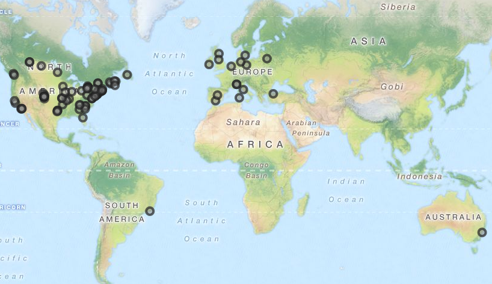
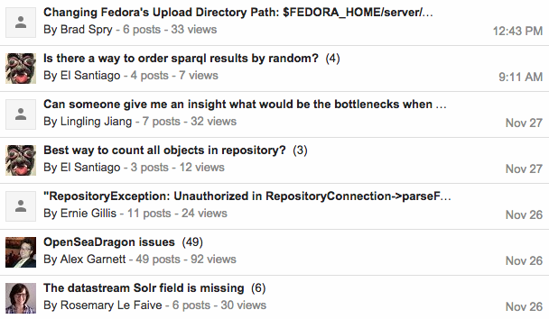
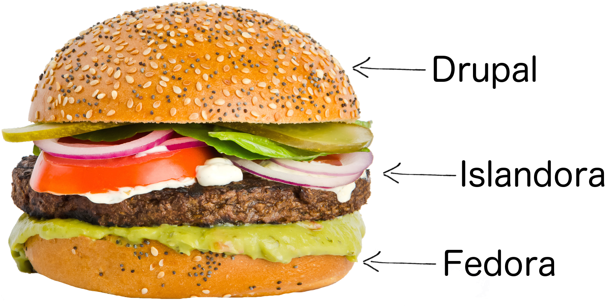

Introduction to
Islandora
Sara Allain | @archivalistic
Definition
Islandora is an open-source software framework designed to help institutions and organizations and their audiences collaboratively manage and discover digital assets using a best-practices framework.
On a Philosophical Level...
Islandora is Open Source
Anybody with the knowledge/skills/time can go in and contribute to the code, making it better for everyone.
No one owns it, but the non-profit Islandora Foundation oversees its maintenance and development as well as community activities.

Islandora is Open Source
This means that we get to control, at a local level, how our software is used.
Russell Munroe, xkcd #743, Infrastructures
Islandora is a Community
There are a bunch of people all over the world working on the software, making it better, and helping each other out.

Islandora is a Community
If you have a problem, you can check the documentation, post to the Google Group, chat with colleagues on IRC, or talk to someone you know to help you fix it (or hack it).

On a Technical Level...
Islandora is a Sandwich
It's a bundle of smaller things squished together between two giant open source platforms - Fedora (storage) and Drupal (display).

Islandora is a Sandwich
Fedora is where we store all the stuff. It's really good at keeping everything safe and secure.
Islandora is a Sandwich
Drupal is the website that the rest of the world sees. It's really good at letting us build cool things like galleries, maps, exhibits, and timelines.

Islandora is a Sandwich
Islandora brings Fedora and Drupal together. It adds a ton of important functionality through its solution packs and modules.

So What's Inside?
Solution packs for storing and presenting common types of data.
Audio ·
Basic Image ·
Book ·
Collection
Compound Object ·
Large Image ·
Newspaper
PDF ·
Video ·
Web ARChive
So What's Inside?
Modules that let you perform various actions on that data and/or the attached metadata.
Batch ingestion ·
Alternative displays
Image annotation ·
Bit-level preservation
Optical character recognition
And many more
So What's Inside?
A discovery layer that provides robust searching